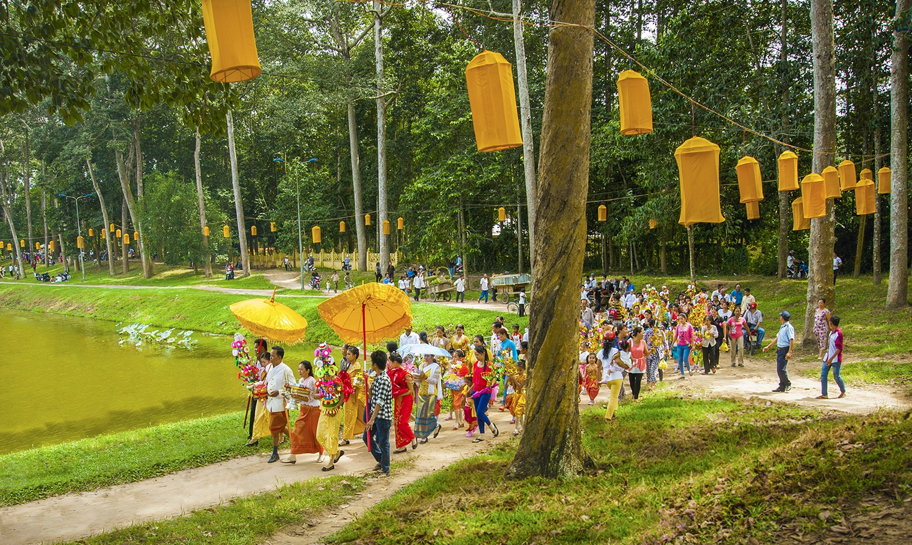
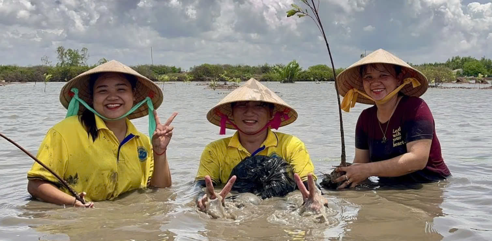

HAPPY TRÀ VINH
Lễ hội Ok Om Bok tại tỉnh Trà Vinh. Ảnh: travinh.dsc.vn
Đến năm 2025, Trà Vinh đặt mục tiêu nâng tầm quy mô tổ chức Lễ hội Ok Om Bok lên cấp quốc gia; đưa du lịch thành ngành kinh tế mũi nhọn của tỉnh vào năm 2030.

Các tua bin gió giữa biển khơi bao la. Ảnh: thamhiemmekong
Nếu có dịp đến khu vực biển Ba Động Trà Vinh, bạn đừng bỏ qua trải nghiệm thú vị ở điện gió Duyên Hải Trà Vinh – nơi được biết đến là địa điểm sống ảo Hot nhất miền Tây thời gian gần đây.

- Tác giả: Nhân
- Ngày tham dự: 14/04/2024
- Mã bài dự thi: 33841
- Link tác phẩm dự thi: https://happy.vietnam.vn/contest/image-2024/submission/33841
- Tác phẩm: "Cánh diều" - Chụp tại: Trà Vinh - Đơn vị:
Lời giới thiệu: Rộn ràng mùa diều 2024. Ký ức tuổi thơ của bao thế hệ

- Tác giả: Nhân
- Ngày tham dự: 13/04/2024
- Mã bài dự thi: 33823
- Link tác phẩm dự thi: https://happy.vietnam.vn/contest/image-2024/submission/33823
- Tác phẩm: "Okombok 2024" - Chụp tại: Trà Vinh - Đơn vị:
Lời giới thiệu: Ao bà ôm đêm lễ hội

- Tác giả: Phạm Thị Trúc Đào
- Ngày tham dự: 01/08/2024
- Mã bài dự thi: 591064
- Link tác phẩm dự thi: https://happy.vietnam.vn/contest/image-2024/submission/591064
- Tác phẩm: "Trồng rừng ngập mặn" - Chụp tại: Trà Vinh - Đơn vị: Cá nhân
Lời giới thiệu: Mỗi ngày là một niềm vui khi cùng nhau lao động làm việc thiện nguyện và có ý nghĩa giúp ích cho mọi người.